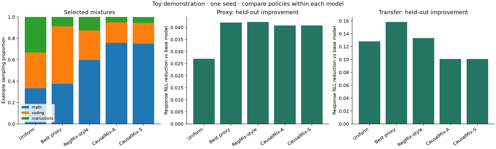

LOCAL RESEARCH DEMONSTRATION
CausalMix, at toy scale
Status: complete. SmolLM2-135M proxy experiments → Qwen2.5-0.5B mixture transfer.
Positive improvement means lower response negative log-likelihood relative to the same model's untrained baseline. Compare policies within each model; raw token losses are not comparable across tokenizers.
Budget and selected profile
{
"estimates": [
{
"comparison_reserve_seconds": 295.54430702730315,
"profile": {
"length": 256,
"runs": 64,
"steps": 16
},
"projected_total_seconds": 1373.5752456595656
},
{
"comparison_reserve_seconds": 141.86638914456125,
"profile": {
"length": 128,
"runs": 64,
"steps": 8
},
"projected_total_seconds": 584.841248361452
},
{
"comparison_reserve_seconds": 141.86638914456125,
"profile": {
"length": 128,
"runs": 32,
"steps": 8
},
"projected_total_seconds": 435.7002484109835
}
],
"frozen_before_outcomes": true,
"selected": {
"length": 256,
"runs": 64,
"steps": 16
}
}
Recorded active experiment time: 10.4 minutes.
Synthetic validation
Passed: True. Effect RMSE: 0.0033. This checks known synthetic effects, not language-model results.
Frozen mixture policies
| Policy | math | coding | instructions |
|---|
| uniform | 0.333 | 0.333 | 0.333 |
| best_proxy | 0.375 | 0.538 | 0.087 |
| regmix | 0.597 | 0.277 | 0.126 |
| causalmix_a | 0.758 | 0.192 | 0.050 |
| causalmix_s | 0.750 | 0.194 | 0.056 |
Estimated target-state effects
| Domain | Effect per log-mixture unit |
|---|
| math | +0.00853 |
| coding | +0.00170 |
| instructions | -0.00537 |
Diagnostics
- Very few proxy runs: heterogeneous effects and policy rankings are preliminary.
{
"constant_effect_r_loss": 1.4190841586521358e-05,
"outer_grouped_r_loss": 1.4980747977077583e-05,
"r_score_vs_zero": 0.7235525867959864,
"residual_treatment_condition": {
"condition": 3.51837323441056,
"ill_conditioned": false,
"rank": 3
},
"zero_effect_r_loss": 5.419022664546346e-05
}
The heterogeneous forest did not outperform the constant-effect baseline on held-out residual prediction. These diagnostics do not establish an advantage from state-dependent effects.

Held-out results
Proxy model
| Policy | Dev improvement | Test improvement | Test Δ vs uniform | math test improvement | coding test improvement | instructions test improvement |
|---|
| best_proxy | +0.04213 | +0.04203 | +0.01505 | +0.04847 | +0.07234 | +0.00527 |
| causalmix_a | +0.04457 | +0.04082 | +0.01384 | +0.09108 | +0.02808 | +0.00330 |
| causalmix_s | +0.04457 | +0.04082 | +0.01384 | +0.09108 | +0.02808 | +0.00330 |
| regmix | +0.04517 | +0.04224 | +0.01526 | +0.07973 | +0.04310 | +0.00390 |
| uniform | +0.02774 | +0.02698 | +0.00000 | +0.03705 | +0.03774 | +0.00615 |
Transfer model
| Policy | Dev improvement | Test improvement | Test Δ vs uniform | math test improvement | coding test improvement | instructions test improvement |
|---|
| best_proxy | +0.14504 | +0.15816 | +0.03002 | +0.15542 | +0.29663 | +0.02243 |
| causalmix_a | +0.10596 | +0.10078 | -0.02737 | +0.17658 | +0.12337 | +0.00239 |
| causalmix_s | +0.10596 | +0.10078 | -0.02737 | +0.17658 | +0.12337 | +0.00239 |
| regmix | +0.13009 | +0.13306 | +0.00492 | +0.17312 | +0.21547 | +0.01059 |
| uniform | +0.12135 | +0.12814 | +0.00000 | +0.14850 | +0.20945 | +0.02648 |
Truncation
| Model | Policy | Encoded examples | Prompt truncation rate | Response truncation rate |
|---|
| proxy | best_proxy | 273 | 20.5% | 9.9% |
| proxy | causalmix_a | 296 | 19.6% | 9.5% |
| proxy | causalmix_s | 296 | 19.6% | 9.5% |
| proxy | regmix | 287 | 19.5% | 9.4% |
| proxy | uniform | 254 | 22.0% | 10.6% |
| transfer | best_proxy | 273 | 19.8% | 9.2% |
| transfer | causalmix_a | 296 | 18.9% | 8.8% |
| transfer | causalmix_s | 296 | 18.9% | 8.8% |
| transfer | regmix | 287 | 18.8% | 8.7% |
| transfer | uniform | 254 | 21.3% | 9.8% |
CausalMix-A and CausalMix-S have identical per-example test losses for: proxy, transfer. Nearby weights can produce identical sampled examples at this short budget and fixed seed. Do not treat the tie as independent supporting evidence.
Completed proxy runs: 64. Completed final comparisons: 10/10.
Interpretation and departures from the paper
- Three small task datasets, rather than five Tulu 3 domains and full benchmark suites.
- SmolLM2 proxies and cross-family transfer to Qwen; small LoRA updates rather than the published full training recipe.
- Pool loss, length, and character diversity replace OpenDataArena quality metrics.
- Response likelihood replaces capability accuracy; coding results are not pass@1.
- Short sequences can truncate both prompts and answers. Counts above are cumulative unique examples encoded by each model instance.
- 5% domain floors, 10,000 candidates, shallow forests, and a RegMix-style baseline are toy adaptations.
- The analytic positive-effect rule is a heuristic with negative coefficients. It is not claimed to solve an unrestricted global optimization.
- One seed and few independent pools do not establish statistical significance. A regression or tie is a valid result.
- Public examples may have appeared in base-model pretraining. Split checks prevent leakage introduced by this experiment only.
Source: CausalMix paper. Implementation settings and provenance are preserved in neighboring JSON files.
Provenance
{
"models": {
"proxy": {
"id": "HuggingFaceTB/SmolLM2-135M",
"revision": "93efa2f097d58c2a74874c7e644dbc9b0cee75a2"
},
"transfer": {
"id": "Qwen/Qwen2.5-0.5B",
"revision": "060db6499f32faf8b98477b0a26969ef7d8b9987"
}
},
"datasets": {
"coding": {
"config": "full",
"id": "google-research-datasets/mbpp",
"license": [
"cc-by-4.0"
],
"revision": "4bb6404fdc6cacfda99d4ac4205087b89d32030c"
},
"instructions": {
"config": "default",
"id": "HuggingFaceH4/no_robots",
"license": "cc-by-nc-4.0",
"revision": "e6f9a4ac5c37faeb744ba9ecf0473184d7f8105b"
},
"math": {
"config": "main",
"id": "openai/gsm8k",
"license": [
"mit"
],
"revision": "740312add88f781978c0658806c59bc2815b9866"
}
}
}